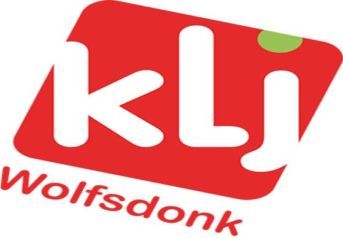

Extra info
KLJ Wolfsdonk is een dolenthousiaste jeugdbeweging die elke zaterdag weer een spetterende activiteit in elkaar bokst. Maar, KLJ is nog veel meer dan een jeugdbeweging alleen! Laten we even een verfrissende duik nemen in het hele KLJ-gebeuren.
De KLJ
KLJ staat voor Katholieke Landelijke Jeugd en bestaat al sinds 1927. Dat wil zeggen dat we dit jaar ons 88ste kaarsje mogen uitblazen!
In onze 280 afdelingen komen er gemiddeld zo'n 30 000 jongeren bijeen. Dit maakt KLJ één van de grote jeugdbewegingen, en de grootste jongerenbeweging in Vlaanderen.
KLJ richt zich ook op drie grote doelen:
- jonge mensen samenbrengen;
- werken aan persoonlijke vorming én de groepsvorming van de leden;
- meewerken aan de opbouw van de samenleving.
Hierbij komt ook het werkthema KLJ voor iedereen. KLJ voor iedereen houdt in dat KLJ wil openstaan voor alle kinderen en jongeren. Of je nu arm bent of rijk, groot of klein, of lijdt aan een handicap: bij KLJ Wolfsdonk is iedereen welkom!
Elke week opnieuw werkt de vertrouwde leiding aan deze doelen, met de hulp van een hele reeks inhoudelijke en methodische speerpunten. Zo brengt KLJ Wolfsdonk niet alleen berg plezier voor de kinderen, maar leren de leden ook wat bij. Zo leren ze meedraaien in hun eigen kleine maatschappij: sociale vaardigheden zijn in de huidige samenleving immers belangrijker dan ooit!
Historiek
Toen in 1927 de BJB (Boerenjeugdbond) opgericht werd, was KLJ Wolfsdonk hierin een van de voortrekkers. Anders gezegd; KLJ Wolfsdonk is dus één van de oudste KLJ's in het land! De BJB was eigenlijk de huidige KLJ, maar die naam Katholieke Landelijke Jeugd kwam pas in het jaar 1965 aangedraafd.
KLJ Wolfsdonk zélf is pas echt beginnen groeien halverwege de jaren '80.